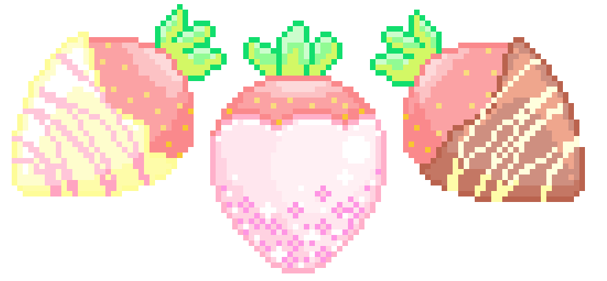

Що таке Creative Commons і з чим його їдять?
Ліцензії Creative Commons (CC) зазвичай не мають офіційного визначення, однак серед багатьох прийнятих визначень є ЮНЕСКО, який містить такий опис:
Ліцензії Creative Commons (CC) - це типові договори, які служать для публічного надання права на використання видання, захищеного авторським правом. Чим менше обмежень передбачає ліцензія, тим більші можливості використання та розповсюдження вмісту. Ліцензії CC дозволяють будь-якому користувачеві безкоштовно завантажувати, копіювати, розповсюджувати, перекладати, повторно використовувати, адаптувати та розробляти свій вміст.
Простими словами ліцензії Creative Commons — це спрощена форма договору по використанні творчості (музики, фото, відео та ін.) в своїх цілях, яка не має письмового договору. передача прав на використання твору. Але при цьому, ви повинні дотримуватися договору використання в залежності від типу ліцензії Creative Commons.

Призначення
Основна мета ліцензій – розширення доступу до знань та культури через відкритий контент.
ДетальнішеВільний контент
Контент, що поширюється за ліцензіями CC, можна використовувати, редагувати та розповсюджувати.
Детальніше